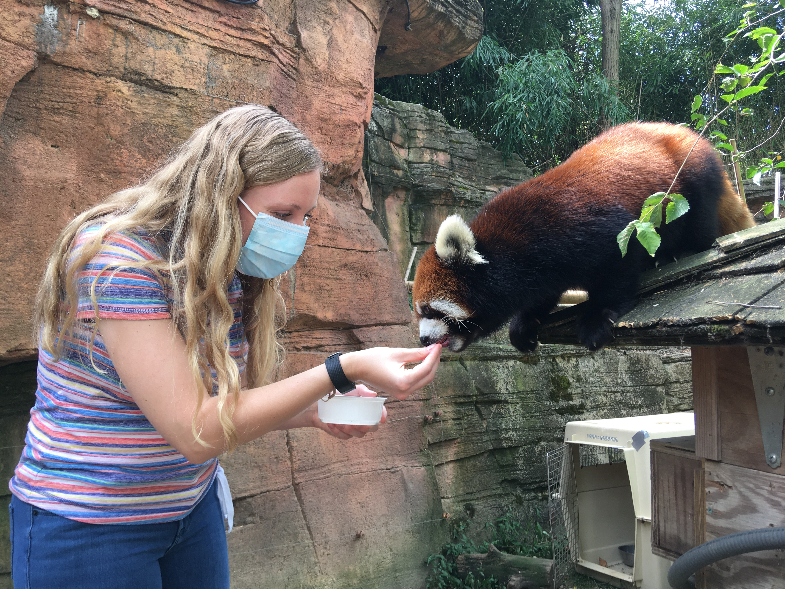

I recently graduated with my Ph.D. and joined CIERA at Northwestern as a Postdoctoral Fellow.
About Me
I am a CIERA Postdoctoral Fellow at Northwestern University (Evanston, IL, USA). I study the characteristics and evolution of type Ia supernovae (exploding white dwarfs) using spectroscopy from both ground- and space-based telescopes. In particular, I am interested in utilizing JWST to discover and understand the infrared behavior of these supernovae. I am PI of 3 JWST programs (Cycle 3+4 5232, Cycle 3 6811, Cycle 2 6591) targeting both normal and peculiar white-dwarf supernovae to link unique infrared signatures to their astrophysical origins (progenitor systems and explosion mechanisms) to test models across a wide wavelength range.
I received my Ph.D. in Physics and Astronomy from Rutgers University, and my bachelor's degree in Physics from the California Institute of Technology (Caltech). For two years following graduation, I taught high school physics at Phillips Academy, Andover in Massachusetts, and The Westminster Schools in Atlanta, Georgia. I love both research and teaching so I am working towards becoming a professor.
I grew up in Grand Junction, Colorado where the clear, beautiful night skies inspired a fascination with stars and the vast universe. In my free time I enjoy gathering with family and friends, traveling the world, and serving in my church community.

